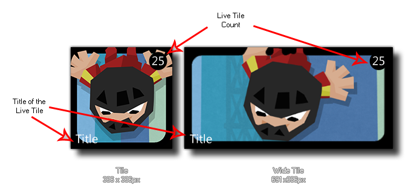

winphone_tile_title(title);
| Argument | Description |
|---|---|
| title | The title of your game tile (a string). |
Returns : N/A
With this function you can assign a title string to the Live Tile associated with your game, as illustrated by the image shown below:

if os_type = os_winphone
{
winphone_tile_title("Catch The Haggis");
}
The above code will check the OS running the game, and if it is the Windows 8 Phone OS, it will set the title of the Live Tile of the game to the given string.